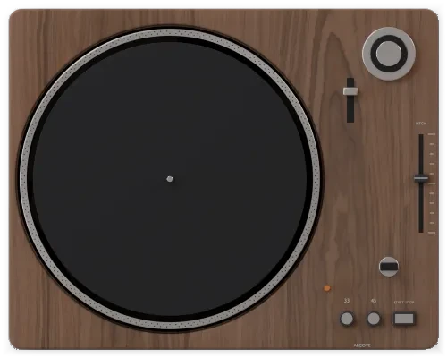

Setting up in the live room
A few things made at Alcove, from rough ideas to finished songs.

Pick a record from the pile.
From rough bedroom voice memos to finished songs, recorded and mixed right here.
Flip the tape and hear what happens when a phone recording becomes a finished song.
Voice Memo
Memo Master
0:000:00
Flip the tape while it plays. The song keeps its place.
| Voice Memo | Finished Master | |
|---|---|---|
| Mic | Phone mic | Studio mics |
| Room | Bedroom, some room noise | Live room |
| Takes | One take | Layered takes and harmonies |
| Mix | None | Mixed and finished |
A quick peek at the room and the vibe.
What a session looks and feels like.
Setting up in the live room

Getting comfortable before the first take

Trying out different sounds

Listening back together
Layering parts, one at a time
Putting the finishing touches on a mix
Send me your rough demo or voice memo. No pressure at all.